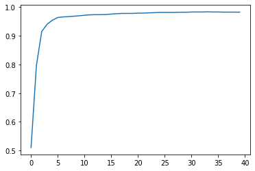

from fastai.vision.all import *Introduction
I am following along with Chapter 4 of {% cite fastbook2020 %}.
Download dataset
#collapse-output
path = untar_data(URLs.MNIST_SAMPLE)So what got downloaded?
path.ls()(#3) [Path('/data/kaushik/.fastai/data/mnist_sample/valid'),Path('/data/kaushik/.fastai/data/mnist_sample/train'),Path('/data/kaushik/.fastai/data/mnist_sample/labels.csv')]That huge path is a pain to look at so shorten it by setting the BASE_PATH.
Path.BASE_PATH = path
path.ls()(#3) [Path('valid'),Path('train'),Path('labels.csv')]What do we have under train?
(path/'train').ls()(#2) [Path('train/3'),Path('train/7')]What do we have under the 7?
(path/'train'/'7').ls().sorted()(#6265) [Path('train/7/10002.png'),Path('train/7/1001.png'),Path('train/7/10014.png'),Path('train/7/10019.png'),Path('train/7/10039.png'),Path('train/7/10046.png'),Path('train/7/10050.png'),Path('train/7/10063.png'),Path('train/7/10077.png'),Path('train/7/10086.png')...]We have 6,265 images of sevens. Look at one using the PIL library.
Image.open((path/'train'/'7').ls().sorted()[0])seven_tensors = [tensor(Image.open(pic_path)).float()/255. for pic_path in (path/'train'/'7').ls().sorted()]
three_tensors = [tensor(Image.open(pic_path)).float()/255. for pic_path in (path/'train'/'3').ls().sorted()]
len(seven_tensors), len(three_tensors)(6265, 6131)Use Fastai convenience function show_image to display the tensor
show_image(seven_tensors[0])<AxesSubplot:>stacked_sevens = torch.stack(seven_tensors)
stacked_threes = torch.stack(three_tensors)
stacked_sevens.shape, stacked_threes.shape(torch.Size([6265, 28, 28]), torch.Size([6131, 28, 28]))Assemble train and validation set
Assemble the training data. Each input will be a vector of 784 values.
train_x = torch.cat([stacked_threes, stacked_sevens]).view(-1,28*28)
train_y = tensor([1]*len(three_tensors) + [0]*len(seven_tensors)).unsqueeze(1)
train_x.shape, train_y.shape(torch.Size([12396, 784]), torch.Size([12396, 1]))Assemble the validation data
valid_7_tensors = torch.stack([tensor(Image.open(pic_path)).float()/255. for pic_path in (path/'valid'/'7').ls().sorted()])
valid_3_tensors = torch.stack([tensor(Image.open(pic_path)).float()/255. for pic_path in (path/'valid'/'3').ls().sorted()])
valid_7_tensors.shape, valid_3_tensors.shape(torch.Size([1028, 28, 28]), torch.Size([1010, 28, 28]))valid_x = torch.cat([valid_3_tensors, valid_7_tensors]).view(-1,28*28)
valid_y = tensor([1]*len(valid_3_tensors) + [0]*len(valid_7_tensors)).unsqueeze(1)
valid_x.shape, valid_y.shape(torch.Size([2038, 784]), torch.Size([2038, 1]))Initialize Parameters
def init_params(size, std=1.0): return (torch.randn(size)*std).requires_grad_()We have one weight for each pixel in the image. We will also have a bias term.
weights = init_params((28*28,1))
bias = init_params(1)
weights.shape, bias.shape(torch.Size([784, 1]), torch.Size([1]))Get Predictions
Calculate the prediction for a single image
(train_x[0]*weights.T).sum() + biastensor([3.9740], grad_fn=<AddBackward0>)train_x[0].shape, weights.shape, weights.T.shape, (train_x[0]*weights).shape(torch.Size([784]),
torch.Size([784, 1]),
torch.Size([1, 784]),
torch.Size([784, 784]))def linear1(xb): return xb @ weights + bias
preds = linear1(train_x)
predstensor([[ 3.9740],
[-0.7695],
[ 2.8669],
...,
[-2.1245],
[-6.0483],
[-9.3377]], grad_fn=<AddBackward0>)Compute Loss
def sigmoid(x): return 1./(1. + torch.exp(-x))def mnist_loss(predictions, targets):
preds = predictions.sigmoid()
return torch.where(targets==1, 1-preds, preds).mean()mnist_loss(preds, train_y)tensor(0.3764, grad_fn=<MeanBackward0>)Mini-Batches
ds = L(enumerate(string.ascii_lowercase))
ds(#26) [(0, 'a'),(1, 'b'),(2, 'c'),(3, 'd'),(4, 'e'),(5, 'f'),(6, 'g'),(7, 'h'),(8, 'i'),(9, 'j')...]Each mini-batch is a tuple of some number of training examples and their corresponding labels
dl = DataLoader(ds,batch_size=5,shuffle=True)
first(dl), list(dl)((tensor([ 5, 20, 14, 11, 13]), ('f', 'u', 'o', 'l', 'n')),
[(tensor([ 1, 13, 14, 7, 0]), ('b', 'n', 'o', 'h', 'a')),
(tensor([ 8, 16, 4, 17, 19]), ('i', 'q', 'e', 'r', 't')),
(tensor([11, 6, 2, 20, 15]), ('l', 'g', 'c', 'u', 'p')),
(tensor([ 9, 18, 21, 12, 22]), ('j', 's', 'v', 'm', 'w')),
(tensor([24, 25, 10, 3, 5]), ('y', 'z', 'k', 'd', 'f')),
(tensor([23]), ('x',))])dset = list(zip(train_x, train_y))
dl = DataLoader(dset, batch_size=256)
valid_dset = list(zip(valid_x, valid_y))
valid_dl = DataLoader(valid_dset, batch_size=256)Simulate a batch of training examples.
batch = train_x[:4]
batch.shapetorch.Size([4, 784])preds = linear1(batch)
predstensor([[ 3.9740],
[-0.7695],
[ 2.8669],
[-6.0669]], grad_fn=<AddBackward0>)loss = mnist_loss(preds, train_y[:4])
losstensor(0.4383, grad_fn=<MeanBackward0>)loss.backward()
weights.grad.shape, weights.grad.mean(), bias.grad(torch.Size([784, 1]), tensor(-0.0103), tensor([-0.0719]))Gradient computation
def calc_grad(xb,yb,model):
preds = model(xb)
loss = mnist_loss(preds, yb)
loss.backward()Train
def train_epoch(model, lr, params):
for xb, yb in dl:
calc_grad(xb,yb,model)
for p in params:
p.data -= p.grad*lr
p.grad.zero_()Batch Accuracy
def batch_accuracy(preds, yb):
preds = preds.sigmoid() #note
correct = (preds > 0.5).float() == yb
return correct.float().mean()batch_accuracy(linear1(batch), train_y[:4])tensor(0.5000)def validate_epoch(model):
accs = [batch_accuracy(model(xb), yb) for xb, yb in valid_dl]
return round(torch.stack(accs).mean().item(), 4)validate_epoch(linear1)0.6533Train one epoch
lr = 1
weights = init_params((28*28,1))
bias = init_params(1)
params = weights, bias
train_epoch(linear1, lr, params)
validate_epoch(linear1)0.6836Train multiple epochs
lr = 1
weights = init_params((28*28,1))
bias = init_params(1)
params = weights, bias
for i in range(20):
train_epoch(linear1, lr, params)
print(validate_epoch(linear1), end=' ')0.6765 0.8387 0.8988 0.9267 0.9374 0.9462 0.954 0.9565 0.9599 0.9618 0.9638 0.9653 0.9667 0.9682 0.9682 0.9706 0.9711 0.9721 0.9721 0.9721 Refactor
Replace gradient update with a home grown optimizer
class BasicOptim(nn.Module):
def __init__(self,params,lr): self.params, self.lr = list(params), lr
def step(self,*args,**kwargs):
for p in self.params: p.data -= p.grad*self.lr
def zero_grad(self,*args,**kwargs):
for p in self.params: p.grad = Nonelr = 1
weights = init_params((28*28,1))
bias = init_params(1)
params = weights, bias
opt = BasicOptim(params, lr)
def train_epoch(model, lr, params):
for xb, yb in dl:
calc_grad(xb,yb,model)
opt.step()
opt.zero_grad()
for i in range(20):
train_epoch(linear1, lr, params)
print(validate_epoch(linear1), end=' ')0.6269 0.8379 0.9174 0.9409 0.9496 0.9545 0.9589 0.9623 0.9658 0.9672 0.9687 0.9697 0.9692 0.9697 0.9721 0.9721 0.9721 0.9726 0.9726 0.9731 Replace init_params and linear1 with Pytorch nn.Linear
nn.Linear holds both the weights and bias and takes care of initializing the parameters.
linear_model = nn.Linear(28*28,1)
weights, bias = linear_model.parameters()
weights.shape, bias.shape(torch.Size([1, 784]), torch.Size([1]))lr = 1
linear_model = nn.Linear(28*28,1)
opt = BasicOptim(linear_model.parameters(), lr)
def train_epoch(model, lr, params):
for xb, yb in dl:
calc_grad(xb,yb,model)
opt.step()
opt.zero_grad()
for i in range(20):
train_epoch(linear_model, lr, params)
print(validate_epoch(linear_model), end=' ')0.4932 0.4932 0.6816 0.8687 0.9185 0.936 0.9502 0.958 0.9638 0.9658 0.9678 0.9697 0.9712 0.9741 0.9746 0.9761 0.9765 0.9775 0.9785 0.9785 Replace home grown optimizer with fastai SGD
lr = 1
linear_model = nn.Linear(28*28,1)
opt = SGD(linear_model.parameters(), lr)
def train_epoch(model, lr, params):
for xb, yb in dl:
calc_grad(xb,yb,model)
opt.step()
opt.zero_grad()
for i in range(20):
train_epoch(linear_model, lr, params)
print(validate_epoch(linear_model), end=' ')0.4932 0.8447 0.8398 0.9126 0.9336 0.9478 0.9551 0.9629 0.9658 0.9678 0.9692 0.9717 0.9741 0.9751 0.9761 0.9761 0.977 0.978 0.9785 0.9785 Replace training loop with Fastai Learner.fit
Observe how we are able to pass in the mnist_loss and batch_accuracy functions. Recall that within these functions we pass the predictions through the sigmoid function.
#collapse-output
dls = DataLoaders(dl, valid_dl)
learn = Learner(dls, nn.Linear(28*28,1), loss_func=mnist_loss
, opt_func=SGD
, metrics = batch_accuracy)
learn.fit(20,lr=1)| epoch | train_loss | valid_loss | batch_accuracy | time |
|---|---|---|---|---|
| 0 | 0.637023 | 0.503487 | 0.495584 | 00:00 |
| 1 | 0.524831 | 0.192524 | 0.839058 | 00:00 |
| 2 | 0.192777 | 0.178215 | 0.840039 | 00:00 |
| 3 | 0.084406 | 0.105942 | 0.912169 | 00:00 |
| 4 | 0.044523 | 0.077318 | 0.933268 | 00:00 |
| 5 | 0.028958 | 0.061924 | 0.947988 | 00:00 |
| 6 | 0.022560 | 0.052394 | 0.955839 | 00:00 |
| 7 | 0.019714 | 0.046067 | 0.962709 | 00:00 |
| 8 | 0.018272 | 0.041615 | 0.966143 | 00:00 |
| 9 | 0.017409 | 0.038327 | 0.967125 | 00:00 |
| 10 | 0.016804 | 0.035799 | 0.969578 | 00:00 |
| 11 | 0.016330 | 0.033789 | 0.972031 | 00:00 |
| 12 | 0.015934 | 0.032144 | 0.973503 | 00:00 |
| 13 | 0.015597 | 0.030771 | 0.974975 | 00:00 |
| 14 | 0.015305 | 0.029609 | 0.975957 | 00:00 |
| 15 | 0.015053 | 0.028614 | 0.976938 | 00:00 |
| 16 | 0.014832 | 0.027755 | 0.977429 | 00:00 |
| 17 | 0.014637 | 0.027009 | 0.977920 | 00:00 |
| 18 | 0.014463 | 0.026354 | 0.978410 | 00:00 |
| 19 | 0.014305 | 0.025776 | 0.978901 | 00:00 |
Add a rectified linear unit
#collapse-output
simple_net = nn.Sequential(nn.Linear(28*28,30),
nn.ReLU(),
nn.Linear(30,1))
learn = Learner(dls, simple_net, loss_func=mnist_loss
, opt_func=SGD
, metrics=batch_accuracy)
learn.fit(n_epoch=40, lr=0.1)| epoch | train_loss | valid_loss | batch_accuracy | time |
|---|---|---|---|---|
| 0 | 0.334276 | 0.397611 | 0.510304 | 00:00 |
| 1 | 0.153756 | 0.235990 | 0.795878 | 00:00 |
| 2 | 0.084339 | 0.117733 | 0.915113 | 00:00 |
| 3 | 0.054809 | 0.079118 | 0.940137 | 00:00 |
| 4 | 0.041189 | 0.061640 | 0.954367 | 00:00 |
| 5 | 0.034297 | 0.051851 | 0.963690 | 00:00 |
| 6 | 0.030381 | 0.045687 | 0.965653 | 00:00 |
| 7 | 0.027859 | 0.041476 | 0.966634 | 00:00 |
| 8 | 0.026048 | 0.038415 | 0.968106 | 00:00 |
| 9 | 0.024647 | 0.036075 | 0.969578 | 00:00 |
| 10 | 0.023509 | 0.034219 | 0.971541 | 00:00 |
| 11 | 0.022557 | 0.032701 | 0.973013 | 00:00 |
| 12 | 0.021745 | 0.031426 | 0.973503 | 00:00 |
| 13 | 0.021041 | 0.030334 | 0.973503 | 00:00 |
| 14 | 0.020424 | 0.029385 | 0.973994 | 00:00 |
| 15 | 0.019877 | 0.028547 | 0.975466 | 00:00 |
| 16 | 0.019388 | 0.027802 | 0.976938 | 00:00 |
| 17 | 0.018946 | 0.027133 | 0.977920 | 00:00 |
| 18 | 0.018545 | 0.026529 | 0.977920 | 00:00 |
| 19 | 0.018177 | 0.025982 | 0.977920 | 00:00 |
| 20 | 0.017839 | 0.025482 | 0.978901 | 00:00 |
| 21 | 0.017526 | 0.025026 | 0.978901 | 00:00 |
| 22 | 0.017234 | 0.024606 | 0.979882 | 00:00 |
| 23 | 0.016962 | 0.024220 | 0.980373 | 00:00 |
| 24 | 0.016708 | 0.023863 | 0.981354 | 00:00 |
| 25 | 0.016468 | 0.023533 | 0.981354 | 00:00 |
| 26 | 0.016243 | 0.023226 | 0.981354 | 00:00 |
| 27 | 0.016030 | 0.022941 | 0.981354 | 00:00 |
| 28 | 0.015829 | 0.022676 | 0.981845 | 00:00 |
| 29 | 0.015638 | 0.022429 | 0.981845 | 00:00 |
| 30 | 0.015457 | 0.022199 | 0.982826 | 00:00 |
| 31 | 0.015285 | 0.021983 | 0.982826 | 00:00 |
| 32 | 0.015121 | 0.021782 | 0.982826 | 00:00 |
| 33 | 0.014964 | 0.021593 | 0.983317 | 00:00 |
| 34 | 0.014815 | 0.021416 | 0.982826 | 00:00 |
| 35 | 0.014672 | 0.021249 | 0.982826 | 00:00 |
| 36 | 0.014535 | 0.021091 | 0.982336 | 00:00 |
| 37 | 0.014403 | 0.020943 | 0.982336 | 00:00 |
| 38 | 0.014276 | 0.020802 | 0.982336 | 00:00 |
| 39 | 0.014154 | 0.020669 | 0.982336 | 00:00 |
learn.recorder records the output from the training process. The three items recorded here are train_loss, valid_loss and batch_accuracy
learn.recorder.values[:2][(#3) [0.334276407957077,0.39761149883270264,0.5103042125701904],
(#3) [0.1537560522556305,0.2359904646873474,0.7958782911300659]]Plot how the accuracy evolved during the training.
plt.plot(L(learn.recorder.values).itemgot(2))
The final accuracy is as below:
learn.recorder.values[-1][2]0.98233562707901References
{% bibliography –cited %}